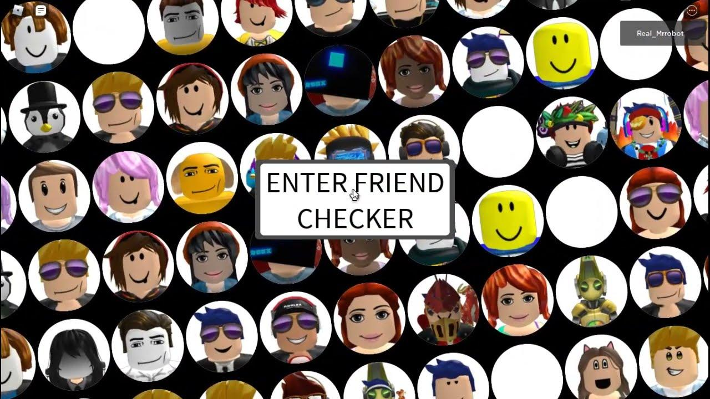

AMISTADES O CONEXIONES REALES A TRAVES DE ROBLOX
En Roblox, las amistades se crean a través de solicitudes de amistad, que se pueden enviar y aceptar en la aplicación móvil o en el sitio web.
Una vez aceptada, la persona se agrega a tu lista de amigos y puedes comunicarte con ella, unirte a sus juegos o invitarla a un grupo.
Roblox es un lugar fantaacute;stico para construir mundos, jugar dentro de experiencias y expandir tu creatividad, ¡pero también es un gran lugar para crear y mantener amistades con tus compañeros Robloxianos!
Con un límite de 1000 amigos, puedes conectar con más amigos que nunca.
Si ya sabes quién te gustaría que fueran tus amigos, puedes encontrarlos buscando su nombre de usuario en el campo Buscar en la parte superior de la pantalla. También puedes conocer nuevas personas en experiencias y grupos, y llegar a conocerlos.

En Roblox, las amistades son una parte fundamental para disfrutar de la plataforma. Puedes hacer amigos buscando usuarios, uni&eacaute;ndote a sus grupos o jugando con ellos en experiencias.
Las amistades te permiten comunicarte, jugar juntos y participar en actividades en común dentro del juego.
Cuando un usuario envía una solicitud de amistad a otro, quien la recibe podría ver fácilmente cuántos amigos en común tiene y, si tiene alguno, debería poder hacer clic en ella para ver una lista de ellos.